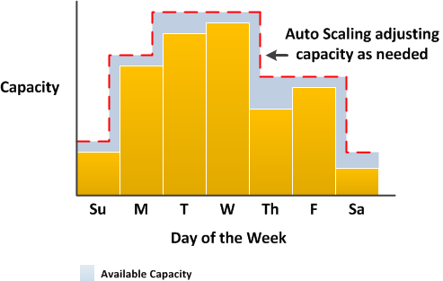
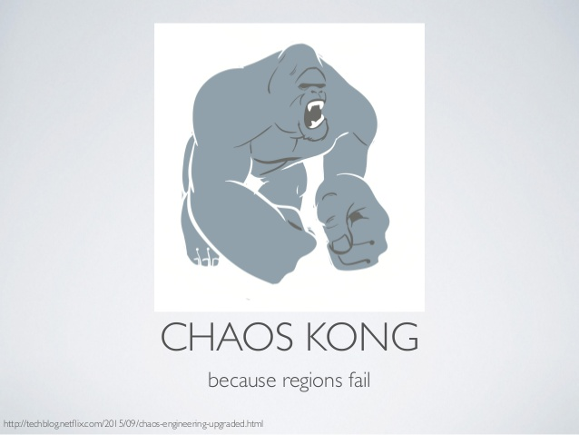

Welcome to scalability 101
Block 1: Introduction
What is scalability?
Scalability is the capability of a system, network, or process to handle a growing amount of work, or its potential to be enlarged to accommodate that growth. For example, a system is considered scalable if it is capable of increasing its total output under an increased load when resources (typically hardware) are added.
Properties of a system
- Scalable: a system whose performance improves after adding hardware, proportionally to the capacity added.
- Resilient or graceful degration: a resilient control system is one that maintains state awareness and an accepted level of operational normalcy in response to disturbances.
- Distributed: a distributed system is a model in which components located on networked computers communicate and coordinate their actions by passing messages.
Types of systems
- Concurrent systems.
- Parallel systems.
- Distributed systems.
Evolution of CPU processors.

Evolution of available RAM memory.

Evolution of Global IP traffic.

Where we deploy applications?
- On premise, bare metal.
- Public cloud, AWS
- Public cloud, GCP
- Public cloud, Azure
- Public cloud, Heroku
- Private cloud, OpenStack
- Private cloud, VSphere
Where we deploy applications?
- Container orchestrator, Mesos/Marathon/DCOS
- Container orchestrator, Kubernetes
- Container orchestrator, Nomad
- Container orchestrator, Titus
Cloud timeline

What we deploy?
- Virtual Machines.
- Containers.
- Code.
Digression: what is a container?

How we deploy?
Snowflake servers: an operator copies code in the server and install it and restart services manually.
With config management: using config management tools like Puppet, Ansible, SaltStack, Chef, Juju we get PhoenixServers.
Using immutable infrastructure (golden image): we create an artifact that is never modified while being promoted or deployed between environments.
How we organize deployments??
Deployment day!: after QA, a date is set and that date and time we do the deployment.
Continuous deployment/delivery: there is an automated process (a pipeline) that fetch the source code from a commit event, builds it, test it and deploy it.
How we shift traffic?
-
Highlander: kill the old server first, then deploy the new one.
-
Rolling upgrade: Replace servers one by one with the new version.
How we shift traffic?
-
Red/black or blue/green: deploy a new server group with the new version, deregister old server group from loadbalancer and register new one.
-
Canary release: Deploy a new server group of one server, register the new group without deregistering old one, watch metrics if everything is ok resize new group to target old group size and shrink old one.
How we architecture applications?
-
Monoliths: The whole application is in the same codebase and in the same deployable unit.
-
(Micro)services: The service is responsible of a tiny part of the domain responsability (hence the micro prefix), each service is a deployable unit and the communication goes through network.
How we architecture applications?
-
Serverless:
Applications where some amount of server-side logic is still written but is run in stateless compute containers that are event-triggered, ephemeral, and fully managed by a 3rd party
How we do operations?
-
Operations/Sysadmin team: specialized team that handles operations, usually doing oncall shifts, tooling for development teams and deployments
-
You build it, you run it : Each team takes responsability for the whole process, from coding to running the software. There are organizational challenges in embracing DevOps methodologies and oncall responsabilities.
Welcome to FooBar enterprises
You have been hired as CTO of this company and sole developer of the product.
The main product of the company is an url-shortener.
It's for now only an API, no frontend involved, it's expected to receive lots of traffic.
Our tech stack
Application written in golang.
Github for hosting code.
Cloudformation/Helm to capture infrastructure as code.
Jenkins as our CI server.
Spinnaker as our CD tool.
Kubernetes as our development environment.
AWS as our production environment.
Our development process

Github
- Github is our hosted version control system based on git.
- Our project is open source and public, if you want to host git privately, you can set up your own git server or more commonly Github Enterprise, Bitbucket or Gitlab.
- We made an organisation at Github named friendsofscalability, request access there!
Jenkins
- CI, continous integration is the practice of build the software on a clean environment to detect build flaws, do integration tests
- Jenkins is an open source CI server that supports almost every build system.
- In our case each commit will trigger a webhook that triggers a build on Jenkins of that commit.
Jenkins
- Alternatives: TravisCI, CircleCI, TeamCity, GoCD, check out this comparison ...
- Spinnaker has native integrations with Jenkins and TravisCI, however Travis only provides a hosted version and a enterprise one, so we went for Jenkins.
- Our jenkins server is at http://ci.geekshubs.friendsofscalability.com:8080/
Spinnaker
- Spinnaker is an open source, multi-cloud continuous delivery platform created by Netflix, with collaborations from Google, Pivotal and other companies.
- The core of Spinnaker is the ability of creating pipelines.
- Pipelines codifies the deployment of some application following the immutable infrastructure aproach.
- Git -> Jenkins -> Spinnaker Pipeline.
Spinnaker
- The pipeline could contain several steps but at least, tipically it will have a Bake step for creating the golden image for the application
- And then a Deploy step, that will deploy this image over some cloud provider (AWS, GCP, Kubernetes)
- Our Spinnaker setup is at https://spinnaker.geekshubs.friendsofscalability.com/
AWS
AWS
- In exchange for money, AWS will provide:
- Compute resources: EC2, ECS, VPCs,Lambda, Security Groups, AutoScaling Groups, ELB, ALB, NLB
- Storage resources: S3, RDS (Databases), DynamoDB, Elasticache
- Security resources: IAM, KMS
- Orchestration: Cloudformation
- Others: ParameterStore, ServiceDiscovery, Kinesis, API Gateway...
Docker
- Docker Inc is the company that popularized container usage on 2013 with the docker tool.
- The docker tool has been including more than just container runtime tools, things like swarm o machine
- Docker now ships a free community edition docker-ce, an enterprise one docer-ee, and is also an open source project moby.
Docker
- The OCI initiative aims to a vendor free technology for containers.
- container image specification
- container runtime specification
- container networking specification
- container storage specification
- After the success of docker several companies built its own container runtime engines, notable ones are rkt from CoreOS or CRI-O from CNCF.
Kubernetes
- Container orchestration at Scale, a project that covers running application on containers from end to end.
- Started at Google, now under the CNCF Foundation, RedHat, CoreOS, Huawei and many other companies contribute to the project managed in the open.
- Fast paced project, k8s 1.0 started at 2015 - 1.10 03/2018.
- Can be installed on baremetal, lots of cloud providers offers a managed version (GKE, AKS, EKS..)
- There is also a local environment cluster project Minikube.
Kubernetes architecture

Kubernetes basic concepts
| Pod | Group of containers that lives together |
| Service | Represents a balancer that expose traffic within the cluster or outside, the selector attribute registers pods. |
| Deployment/ReplicaSet | It watches the current pods running under the same deployment/replicaset and creates new pods if it doesnt fullfil the specification. |
Kubernetes basic concepts
| ConfigMaps | Stores application configuration. |
| Secrets | Stores application secrets. |
| Volumes/PersistentVolumes/StorageClass | Defines storages sources that could be used on Deployments/Pods. |
Kubernetes basic concepts
| Ingress. | Defines rules (ingress rules) that configures the cluster edge balancer to send traffic from outside directed to an application. |
| Nodes. | Kubernetes nodes. |
| A bunch more. | PodPriorities, PodSecurityPolicy, CustomResourceDefinition... |
Kubernetes client interaction
- Every action is done via the Kubernetes API.
- Kubernetes controllers follows the Reconciler pattern extensively!.
- Can interact with API through client libraries or cli (kubectl).
- Each API object has a definition that could be written over YAML or JSON.
kubectl cheat sheet
get|describe|edit|explain|delete OBJECT |
each object accepts the following actions in a CRUD way. |
create|replace|apply -f FILE |
Creates/replaces/applies an object defintion from FILE. |
kubectl cheat sheet
-o yaml|wide|jsonpath|go-template |
Output format for kubectl get commands, wide gives a lot of actual info whereas describe gives a temporal set of events. |
kubectl get|delete pods|svc|... -l LABELKEY=LABELVALUE OBJECT |
applies the kubectl command to whatever pods|servicers or others that matches the labels. |
kubectl cheat sheet
The kubernetes documentation while not extremely updated, is well written and complete! Check it out the kubectl one.
Hands on
- It's time for you to finish our onboarding guide deploying our application.
Block 2: Scaling/Loadbalancing
What do you think about our current application?
Sprint planning
- Set up autoscaling.
- Set up loadbalancing.
- Set up config management.
Loadbalancing
Loadbalancing: benefits
| Naming abstraction | Each client only need to remember loadbalancer address instead of discovering services. Usually via DNS or a client library. |
| Fault tolerance | It can prevent a faulty backend to receive requests. |
| Cost and performance benefits | it can keep the network traffic distributed between different datacenters or network routes which improves latency and reduces network costs. |
Loadbalancing
| Layer 4 Balancers | "Application protocol" agnostic, move bytes from source to dest. |
| Layer 7 Balancers | "Application protocol" knowdlege, most typical HTTP ones. |
Loadbalancing: classes
| Middle proxy | |
| Edge loadbalancer |
Loadbalancing: classes
| Embedded client library |  |
| Sidecar proxy |
L7 Loadbalancers: typical features
- Service discovery
- Health checking
- Load balancing
- Sticky sessions
- TLS termination (HTTP/2)
- Observability
- Security and DoS mitigation
Loadbalancing algorithms
- Round Robin
- IP:hash
- Least conn
- Least latency
- Weighted Round Robin, Weighted least conn
Loadbalancing takeaways
- Networking devices are moving from dedicated hardware to sofware run on commodity software
- Container and some microservices architectures are moving towards the service mesh pattern.
Service Mesh or sidecar proxy

Service Mesh: control plane
Service Mesh implementations
How Istio works
Edge loadbalancers at scale
Handling overload
- Load shedding by criticality.
- Graceful degration.
- Rate limiting.
- Client side throttling.
- Client retries.
Handling overload

Autoscaling
What is autoscaling?
 |
Autoscaling
|  |
AutoscalingGroup
- There is always a min capacity and a maximum capacity.
- Autoscaling will determine if desired capacity will increase or decrease.
- The logic that dictates that are called scaling policies.
AutoscalingGroup

Scaling policies: simple
- You configure an alarm following that triggers when a metric (CPU/Memory/Requests/Messages in queue) pass a threshold.
- The alarm will trigger an add capacity action (scale up) or reduce capacity action (scale down).
- There is a cooldown to give enough time to get metrics and reevaluate.
Setting metrics for autoscaling
- In AWS, could be anything that triggers the Autoscaling API but Cloudwatch is the default method.
- In Kubernetes, you get metrics from heapster ( <1.9) or from metricsServer (1.9+).
You can always do complex things.
Predictive AutoScaling. Use your data to predict your scaling needs.
Scaling patterns.
Scaling mantra
Scale up quickly, scale down slowly.Writing scalable applications
As a "general" guide follow the 12-factor approach.
Trendiness now calls them cloud native applications, however the underlying principles remains the same.
The 12 factor app manifesto was developed by Heroku circa 2011.
12 Factor apps
| I. Codebase | One codebase tracked in revision control, many deploys |
| II. Dependencies | Explicitly declare and isolate dependencies |
| III. Config Store | config in the environment |
| IV. Backing services | Treat backing services as attached resources |
| V. Build, release, run | Strictly separate build and run stages |
12 Factor apps
| VI. Processes | Execute the app as one or more stateless processes |
| VII. Port binding | Export services via port binding |
| VIII. Concurrency | Scale out via the process model |
| IX. Disposability | Maximize robustness with fast startup and graceful shutdown |
12 Factor apps
| X. Dev/prod parity | Keep development, staging, and production as similar as possible |
| XI. Logs | Treat logs as event streams |
| XII. Admin processes | Run admin/management tasks as one-off processes |
Scaling the DB
- Follower/leader approach (asynchronous replication)
- Multileader
- Equal nodes (there are no leaders).
- NoSQL, NewSQL or Relational?
- (Event) Queues.
Follower/Leader approach
- Writes goes to leader, leader keeps state over WAL, journal...
- Leader updates journal entries to followers, followers reconstruct the state from journal.
- Follower have the state delayed by N seconds, where N >=0, if N is big enough the follower would stop the replication.
- to scale the storage, is usual to create several follower/leaders clusters with a shard of the data and one follower/leader cluster that holds the sharding data.
- Open question: What happens when leader goes down?
Equal nodes (there are no leaders)
- All the nodes are equal, there are no leader nodes.
- If the client can connect to one node it would receive the nodes list it can connect.
- Data is sharded and replicated between the nodes of the cluster.
Multileader
- Some traditional relational databases or engines provides multileader capabilities.
- This is achieved through synchronous replication
- Open question: How conflicts are solved?
- If one of the multiple leaders goes down what happens?
(Event) Queues
- A tipical evolution of microservices architecture.
- State is persisted on a shared queue, the event queue.
- The queue is another database, and needs to be scaled.
- Scale is really sensitive to read/writes throughput and operational excellence of the team.
NoSQL, NewSQL or SQL
What are the differences?
CAP theorem

Images taken from this good article by Robert Greiner here
CAP theorem: CP

Images taken from this good article by Robert Greiner here
CAP theorem: AP

Images taken from this good article by Robert Greiner here
CAP theorem, a modern approach
Image extracted from a really interesting arxiv article
Database mantra
- Maintaining state is hard and a high maintenance operation, avoid it if you can.
- You need to understand the consistency and operating models of the database you have chosen.
You have read a lot of reddits and subreddits, what about some coding?
Are we ready for production, now?
Retrospective actions.
- Create new clusters of applications specialized by requests.
- Set up service discovery.
- Set up circuit breakers.
Service discovery
What is service discovery?
- Hey, we talked about this in the loadbalancer part.
- Nginx/server and an autoscaling service.
Service discovery: Usual suspects
| ZooKeeper from Apache | Library clients |
| Eureka from Netflix | HTTP API |
| Etcd from CoreOS | HTTP / gRPC API |
| Consul from Hashicorp | HTTP API |
| DNS SRV records | DNS clients |
Service discovery
- They are basically distributed databases. Remember CAP theorem?
- Some of these databases are tuned for consistency (etcd,consul,ZooKeeper) others for availability (DNS, Eureka)
- Consistency is not extremely important as long the result contains some live nodes.
- The client should query the service discovery, ant then loadbalance from the result.
- Client tipically cache the result, so even if the service discovery is down some request could make progress.
Service discovery: usual client implementations.
- Client side loadbalancing library like Ribbon from netflix, Finagle from Twitter and many others..
- Fetch and service restart (not recommended)
- Delegate to the service mesh.
Service discovery: DNS SRV
Why DNS SRV is a bad idea?
Service brokers: one step more
- Service discovery: knowing the service we want to use we will get the servers that provide it.
- Service catalog: Listing all services in a queryable catalog that exposes which services provides.
- Service brokers: using a (https://github.com/openservicebrokerapi/servicebroker) Broker API, applications could discover and use services described in the catalog.
Circuit breakers pattern
- Via service discovery we obtain a list of servers.
- We balance requests between servers.
- What happens if one of the backends is unhealthy?
- We should retry the request with another backend if possible.
- What happens if each backend is down?
- When is safe to start to using backends again?
Circuit breakers
Circuit breakers: implementations
- Hystrix, for Java by Netflix and ported to some other languages by the community.
- Finagle, for Java/Scala by Twitter.
- gobreaker, for Go by Sony.
Digression: The consensus problem
Some of the service discovery implementations uses underneath a distributed consensus algorithm.
Reaching agreement is a fundamental problem in distributed computing.
Most known implementation is Paxos algorithm, an algorithm to reach consensus in a distributed system with network faults.
Another one is Raft, which claims to be a simplified and more efficient version of Paxos with the same guarantees.
Digression: The consensus problem
Did you visited http://thesecretlivesofdata.com/raft/ already?
Talk is cheap, show me the code.
Performance review.
- We have improved resiliency, what is left to do?.
- We need more insights about what is happening.
- Set up metrics and tracing.
- Embrace failure: Chaos Engineering.
Observability
An observable system is one that exposes enough data about itself so that generating information (finding answers to questions yet to be formulated) and easily accessing this information becomes simple.
Observability
Black box vs White Box
Monitoring vs observability
Monitoring vs observability
Monitoring vs observability
The three main observability artifacts
- logs
- traces
- metrics
Logs
A log is an immutable record of discrete events that happened over time on plaintext, structured or binary format.
Traces
A trace is a representation of a series of causally-related distributed events that encode the end-to-end request flow through a distributed system.

Metrics
A list of numbers relating to a particular activity, which is recorded at regular periods of time and then studied.
A comparison between logs, metrics and traces.
- Logs are easy to generate, but costly to process and store.
- Hard to get information from logs due to the log volume.
- Metrics processing and storage has a constant overhead.
- Metrics are also better suited to trigger alerts
- For tracing to be truly effective, every component in the path of a request needs to be modified to propagate tracing information
Observality phases
Alerting guidelines
- Every time my pager goes off, I should be able to react with a sense of urgency. I can only do this a few times a day before I get fatigued.
- Every page should be actionable; simply noting "this paged again" is not an action.
- Every page should require intelligence to deal with: no robotic, scriptable responses.
Observality tooling
- Logs.
- ELK (ElasticSearch, Logstash, Kibana).
- EFK (ElasticSearch, Fluentd, Kibana).
- Graylog, rsyslog
- SaaS (Splunk, Sumologic).
Observality tooling
- Metrics.
- Nagios / Icinga / Sensu.
- Graphite
- Prometheus / InfluxDB
Observality tooling
- Tracing.
- Zipkin.
- Opentracing
- Jaeger
Chaos Engineering
- Start by defining ‘steady state’ as some measurable output of a system that indicates normal behavior.
- Hypothesize that this steady state will continue in both the control group and the experimental group.
- Introduce variables that reflect real world events like servers that crash, hard drives that malfunction, network connections that are severed, etc.
- Try to disprove the hypothesis by looking for a difference in steady state between the control group and the experimental group.
Chaos Engineering
- Chaos doesn't mean random, means disturbance.
- It's need to be done in production, since traffic and behaviour could differ.
- Do it with a service you have enough confidence first,don't harm the user..
- You need a mechanism to copy or divert some percentage of the traffic.
Chaos Engineering
- Chaos doesn't mean random, means disturbance.
- It's need to be done in production, since traffic and behaviour could differ.
- Do it with a service you have enough confidence first, don't harm the user..
- You need a mechanism to copy or divert some percentage of the traffic.
Chaos Engineering: tooling
|  |
Go back to coding, this idea will make you appear on the first page of HackerNews.
This was fun, what's left? What do you think you can do to improve the setup?
Extra ball: Incident management
- Define an incident management framework.
- Create a physical or virtual warroom where people involved on the incident can work isolated
- Appoint an incident commander, which will hold the high state of the incident, an operatinal lead and if needed a communication lead.
- Create a Live Incident Document where people can follow the state of the incident and write down hypothesys
- Don't close the incident when is fixed, it's time for postmortem
Post mortem
- The objective of the postmortem is to learn why it failed and how to improve, forgot about the who and the blame.
- The postmortem will probably generate follow-up tasks, don't close the incident until these tasks are done.
- Hosting a postmortem is an excellent way of learning, invite people from the organisation.